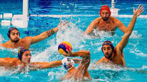
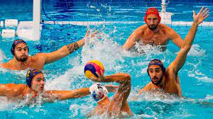

sirve para que las listas salgan hacia abajo y separados sus puntos
- Portero
- boya
- lateral
sirve para insertar imagenes
:format(jpg)/f.elconfidencial.com%2Foriginal%2Ff35%2F5ad%2F729%2Ff355ad72948b966d5030b599bd9fd61f.jpg)
HTML es el componente más básico de la Web. Define el significado y la estructura del contenido web.
El código repetitivo o simplemente repetitivo son secciones de código que se repiten en varios lugares con poca o ninguna variación.
Sirve para resaltar el texto por tamaño desde el h1 hasta el h6
El waterpolo o polo acuático es un deporte que se practica en una piscina, en el cual se enfrentan dos equipos. El objetivo del juego es el de marcar el mayor número de goles en la portería del equipo contrario durante el tiempo que dura el partido.
Los equipos cuentan en el agua con 6 jugadores de campo y 1 portero y debe ser el máximo de 6 jugadores suplentes en la banca. Se diferencian por el color del gorro.
Tradicionalmente los jugadores se sitúan en arco alrededor de la portería contraria a una distancia aproximada de siete metros. El boya se sitúa en el centro del ataque y a una distancia de unos dos o tres metros de la portería contraria.
Las posiciones de defensa son las mismas que las de los atacantes, existiendo multitud de posibilidades tácticas, como defensa individual, zona presionante, zonas por alguna posición donde el rival sea más débil, defensa doble del boya o zona "m"
El boya: El puesto más característico del waterpolo; suele ser el jugador más corpulento, más inteligente y con más potencia de tiro. Se tiene que situar cerca de la portería, a dos o tres metros. Su función es finalizar las jugadas. Al tener esta faceta de organizador tiene que jugar gran parte del tiempo de espaldas a la portería.
1 y 5: Suelen ser dos, uno a cada lado de la portería de su equipo, lo ideal que el extremo 1, el derecho, sea zurdo. Deben jugar con el boya e intentar estar en línea despejada con él.
3: Se sitúa en la misma línea que el boya pero a más distancia de la portería, por ello tiene que tener un buen control de los pases largos.
2 y 4: Colocados enfrente de los palos a unos 5 metros de la portería, entre el central y los extremos. Su función es la de penetración y la de dinamización, por lo que tienen que ser técnicos y rápidos.
produce un salto de línea en el texto.
El guaterpolo es un deporte de mucho esfuerzo
Sirve para enfatizar palabras
El waterpolo
Sirve para resaltar palabras
El portero es de los jugadores mas importantes
Sirve para hacer listas desordenadas
Sirve para hacer lista ordenada
sirve para que las listas salgan hacia abajo y separados sus puntos
sirve para insertar imagenes
